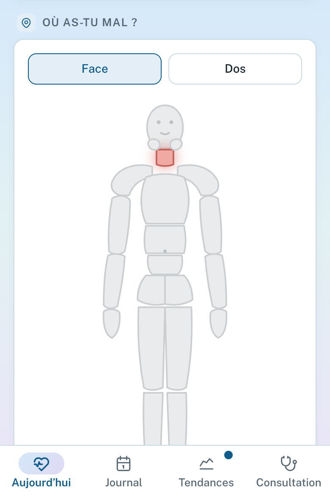
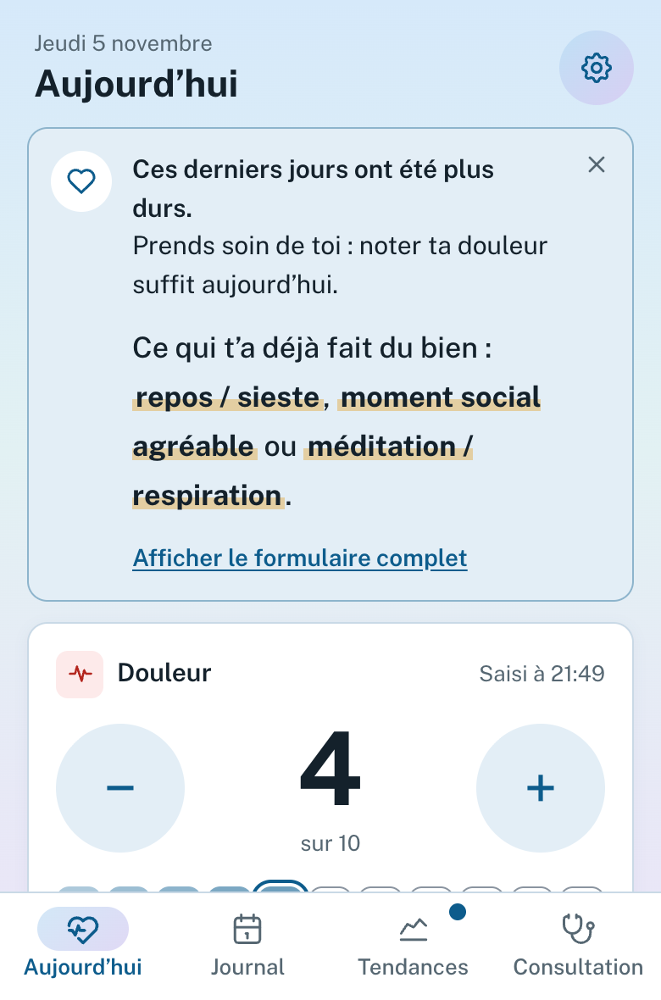
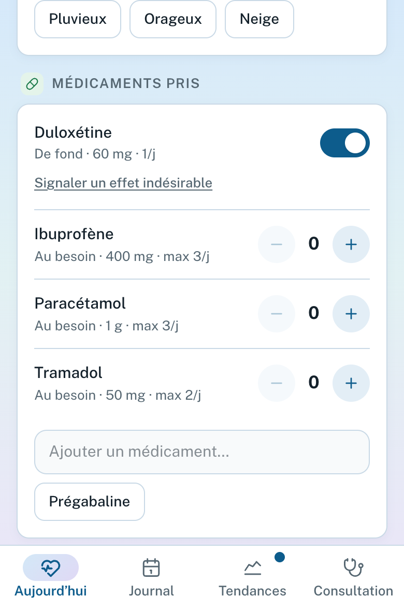

Pour les soignants
Le carnetde vos patients.
OUCH est un carnet de douleur libre et gratuit, pour la fibromyalgie et les autres douleurs chroniques. Une minute par jour pour le patient, deux minutes de lecture pour vous.

OUCH est un carnet de douleur libre et gratuit, pour la fibromyalgie et les autres douleurs chroniques. Une minute par jour pour le patient, deux minutes de lecture pour vous.
La douleur de 0 à 10 suffit pour qu’une journée compte. À côté : fatigue, sommeil, humeur, activité, et où ça fait mal sur une silhouette (25 zones, gauche et droite).

Pendant une poussée, l’écran se réduit à la douleur : le suivi tient, même les jours sans énergie.

Posologie réellement prise, jours oubliés, prises au besoin, soulagement, effets indésirables datés. Les changements de dose se voient sur la courbe.

La période depuis le dernier rendez-vous, comparée à celle d’avant.
Chiffres clés avec une flèche de tendance, courbe, jours plus difficiles.
Les traitements et les effets que le patient a déclarés.
Ses questions, et sa note s’il le souhaite : dans ses mots.
Un PDF fabriqué sur le téléphone du patient : 3 à 5 pages pour le médecin traitant, 6 à 10 pour un centre douleur. Chaque chiffre est placé à côté de la période d’avant.
La plaquette (2 pages), la note méthodologique (12 pages : chaque formule, chaque seuil) et la fiche « Lire un rapport OUCH » sont dans l’app, sous « Vous êtes soignant ? » au premier écran. Vos relectures sont bienvenues.
Mode démo : 90 jours fictifs, sans rien saisir.
OUCH n’est ni un dispositif médical ni un avis médical.